Creación y uso de instancias en OpenStack
2. ¿Para qué lo vamos a utilizar?
4. Conexión a nuestra instancia
¿Qué es OpenStack? ¶
Primero tenemos que saber algo sobre la computación en la nube. El Cloud Computing o la computación en la nube se basa en la entrega de servicios de tipo informático a petición y a través de internet. Algunos de estos servicios son el almacenamiento, los servidores, centros de datos, redes, software y desarrollar aplicaciones, entre otros.
OpenStack es la plataforma Cloud Computing de software libre y de código abierto más importante y que más ha crecido en los últimos años.
Está diseñada para ofrecer nubes públicas o privadas orientadas a ofrecer infraestructuras como servicio a los usuarios (Iaas).
Con ella es posible crear un sistema en la nube (público o privado), utilizado para gestionar diversos recursos computacionales, de almacenamiento y redes.
Para más información se puede consultar la siguiente documentación de Openstack en el IES Celia Viñas.
¿Para qué lo vamos a utilizar? ¶
En nuestro caso nos va a permitir crear instancias (lo que serían máquinas virtuales) en la nube, que van a ser accesibles tanto desde la red del departamento como desde el exterior. Lo que actualmente hacíamos con VirtualBox (con los inconvenientes que esto tenía), ahora lo vamos a hacer con OpenStack, y podremos acceder desde cualquier lugar. En estas instancias vamos a configurar distintos sistemas gestores de bases de datos, servidores, sistemas operativos, etc., para las distintas actividades y prácticas.
Creación de una instancia ¶
Tanto desde la red del departamento, como desde el exterior (con la VPN del departamento, ver el siguiente documento), podemos acceder a OpenStack desde nuestro navegador en la dirección http://172.16.0.11/ o http://openstack.celia Nos tendremos que identificar con nuestro usuario y contraseña.
Ahora mismo, vuestro usuario y contraseña son los mismos, es decir, vuestro usuario de Pasen se utiliza tanto como usuario y contraseña de openstack. El dominio es Default
Lo primero que veremos será la página correspondiente a una visión general de nuestra cuenta.
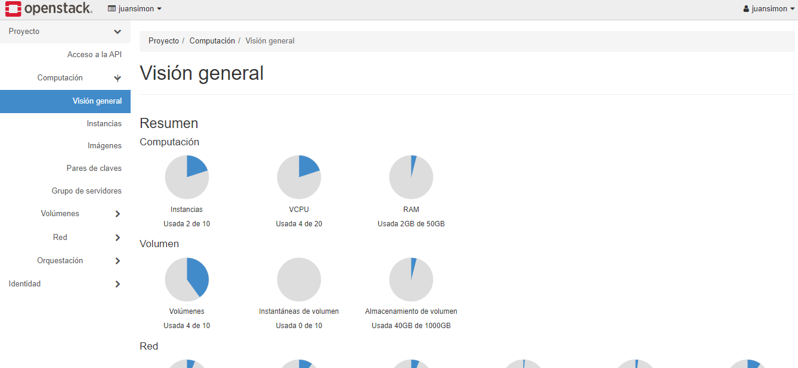
Si accedemos a Instancias, podremos ver las instancias que tenemos creadas, crear nuevas, detenerlas, iniciarlas o borrarlas.
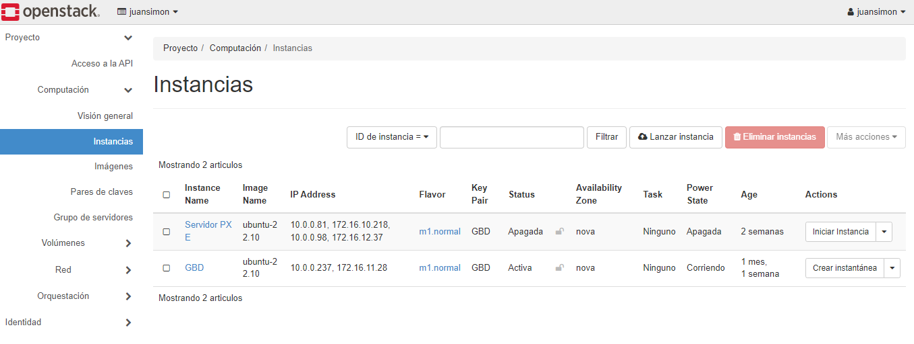
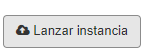
Para crear una nueva instancia, pulsaremos en el botón
En el asistente que nos aparece vamos a realizar lo siguiente:
Paso 1: Asignaremos un nombre a la instancia. También podemos darle una descripción. Pulsar en Siguiente.
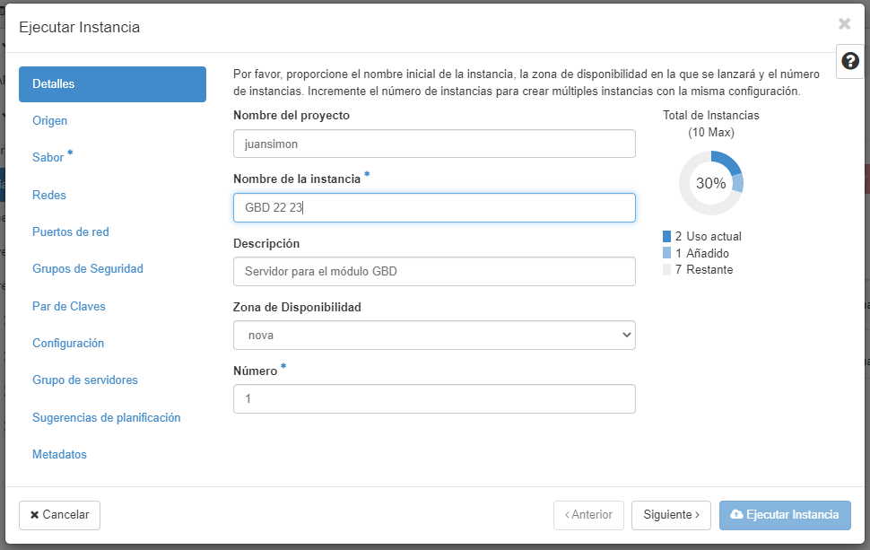
Paso 2: IMPORTANTE. Seleccionamos en Crear nuevo volumen No.
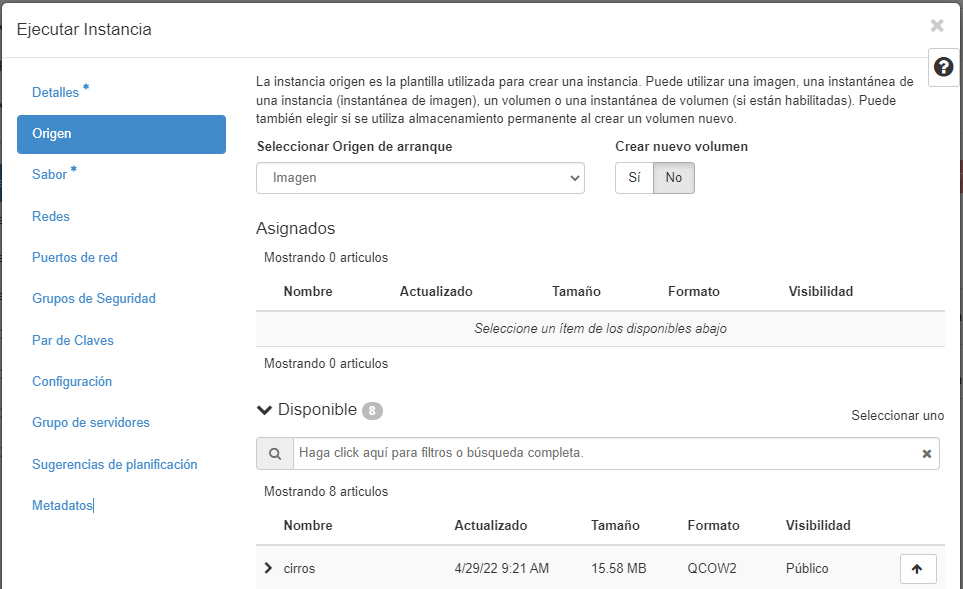
Si el profesor proporciona una instantánea se indica en el Origen de arranque
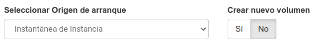
Pulsaremos Siguiente y pasaremos al Paso 3.
Paso 3: En la parte inferior de esta ventana, seleccionaremos el tipo de instancia.
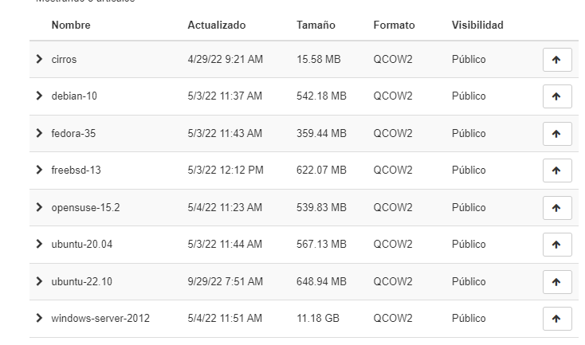
En nuestro caso, el sistema operativo elegido será Ubuntu 24.04. Pulsamos Siguiente.
Paso 4: Escogemos el tamaño de la instancia. Tenemos distintas opciones, de las que cogeremos la normal, medium o large. El tamaño establece cuántos núcleos tendrá asignados, cantidad de RAM y espacio total de Disco.
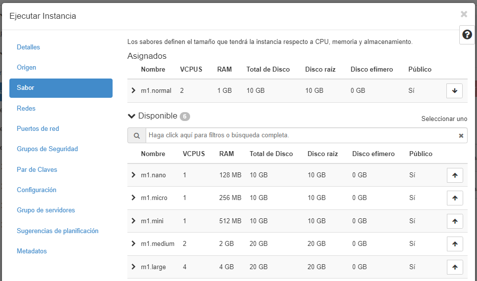
Paso 5: En el siguiente paso no vamos a modificar nada, dejando la configuración que nos proporciona. Por defecto, nuestras máquinas están asociadas a una subred interna asociada a nuestra cuenta.
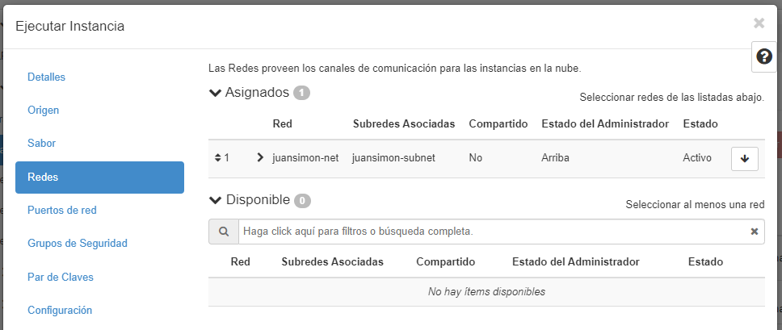
Paso 6: Pulsaremos Siguiente también en las opciones Puertos de red, Grupos de seguridad y Crear Par de claves.
Paso 7: En el paso Configuración vamos a incluir un script para crear la contraseña al usuario de nuestra instancia:
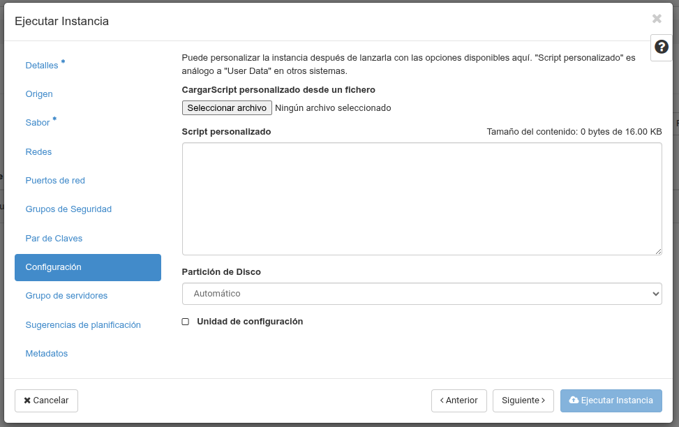
Incluiremos las siguientes líneas, modificando la contraseña
#cloud-config
password: nueva_password
chpasswd: { expire: False }
ssh_pwauth: True
La primera línea con el texto #cloud-config es obligatoria.
La clave password indica cuál será la nueva contraseña del usuario de la imagen.
La clave chpasswd indica que la contraseña no caduca y no tiene que ser cambiada después de iniciar sesión la primera vez.
La clave ssh_pwauth indica que se habilita el acceso por SSH con contraseña.
Tras el paso anterior podemos Ejecutar nuestra Instancia, dejando las opciones que vienen por defecto en los siguientes pasos del asistente.
Después de unos segundos
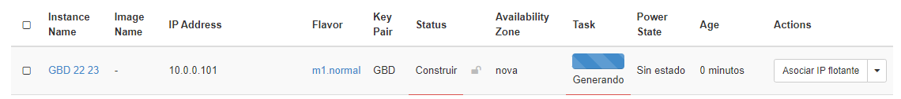
tendremos nuestra instancia corriendo (en ejecución). Ahora podemos realizar distintas acciones, algunas de ellas son:
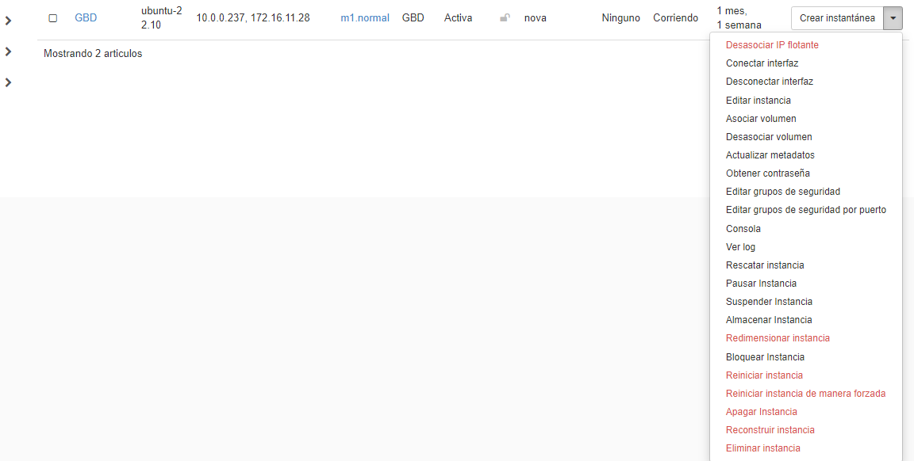
Faltan por realizar algunas acciones en la configuración de la instancia.
Asociar una IP Flotante: asignar una IP que sea accesible desde fuera de OpenStack (desde la red del departamento o desde el exterior) Esa IP que vamos a asignar pertenece a la red-externa de OpenStack y accesible desde la red del departamento. Se le puede dar una descripción y podemos ver cuantas hemos asignado ya.
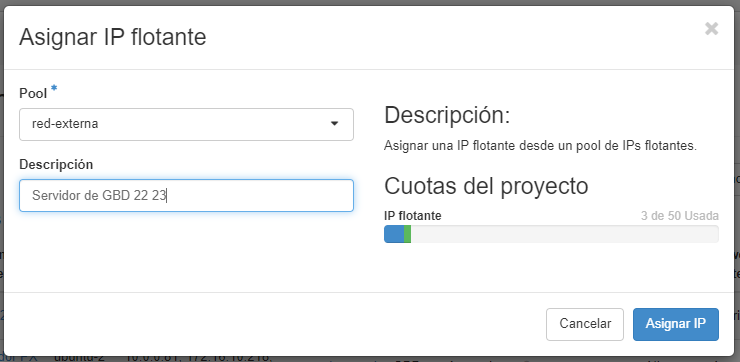
Ahora nos aparecerá en el apartado de IPs flotantes, la IP asociada y con la que podremos conectarnos a nuestra máquina
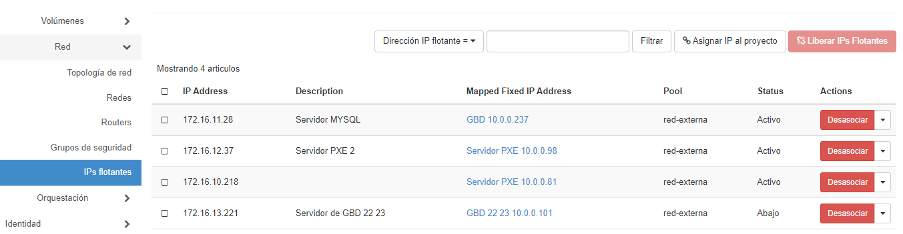
Volvemos a Computación e Instancias. La IP que aparece será la que utilizaremos para conectarnos a nuestra máquina
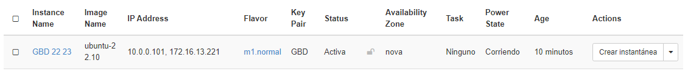
Si pulsamos sobre el nombre de la Instancia, podemos ver los datos generales de nuestra Instancia, configuración, IPs, puertos abiertos, etc.
En Red > Grupos de seguridad podemos acceder, modificar y ver la configuración de nuestros puertos.
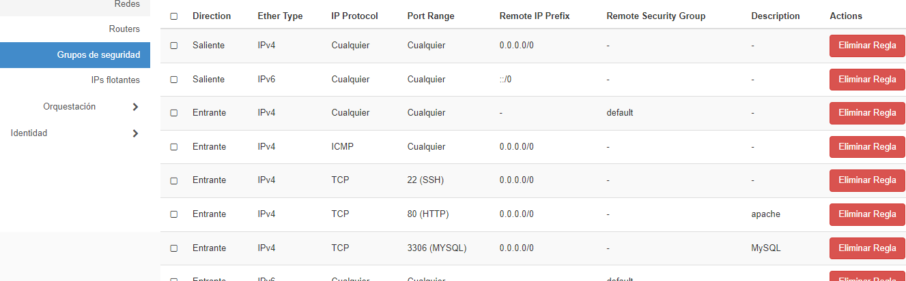
Conexión a nuestra instancia ¶
4.1. Conexión desde consola ¶
Ya tenemos nuestra instancia preparada. Para conectarnos a ella utilizaremos SSH. En un terminal usaremos:
ssh ubuntu@IP_flotante
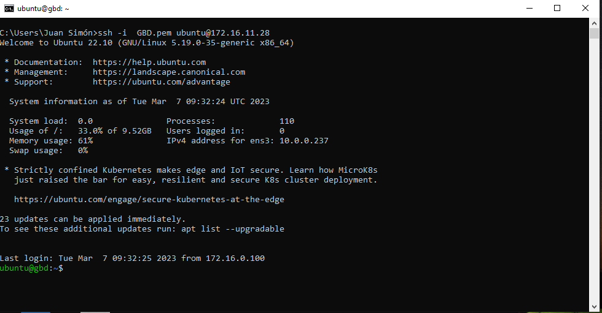
Tened en cuenta que somos los administradores. Si lo hacemos desde nuestra casa tenemos que tener la conexión a la VPN del departamento
4.2. Error por reutilización de IP flotante ¶
Otro error con el que nos podemos encontrar es el siguiente:
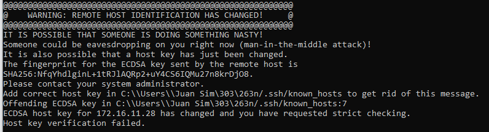
Esto se produce cuando hemos tenido otra instancia con esa IP Flotante y hemos cambiado la clave privada. En este caso accedes al archivo known_hosts y borramos los datos que teníamos asociados.
4.3. Conexión desde OpenStack ¶
Si realizamos esto podremos conectarnos también desde el propio navegador, accediendo a OpenStack (http://openstack.celia), pulsamos sobre nuestra instancia y accediendo a Consola.
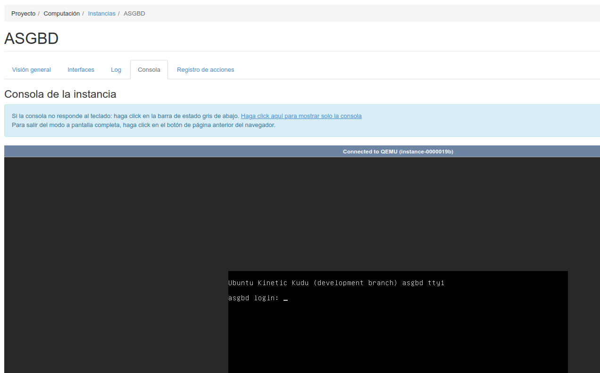
4.4. Copiar archivos a la instancia ¶
La mejor forma de transferir archivos a nuestra instancia es mediante el comando scp (en linux):
scp [origen] [destino]
donde para hacer referencia a nuestra instancia utilizaremos ubuntu@ip_flotante:/ruta
Ejemplos para copiar archivos/carpetas desde nuestro ordenador:
Para copiar un archivo de la carpeta actual a la carpeta en nuestra instancia:
scp ejercicio1.html ubuntu@172.16.11.152:/var/www/html
Para copiar un conjunto de archivos de la carpeta actual a una carpeta en nuestra instancia:
scp *.* ubuntu@172.16.11.152:/var/www/html
Para copiar una carpeta con todas los archivos y subcarpetas a una carpeta determinada en nuestra instancia
scp -r Carpeta ubuntu@172.16.11.152:/var/www/html